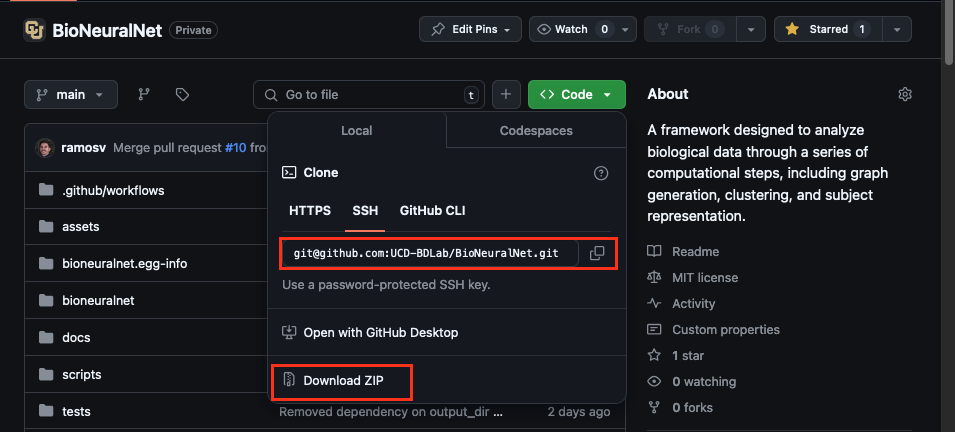
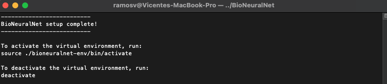
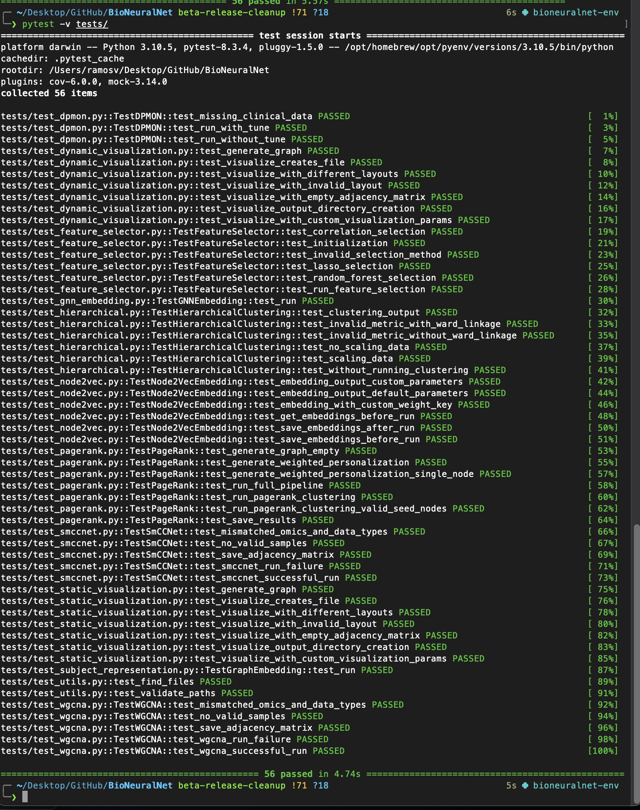

Installation
Requirements: Python 3.10 and 3.11 have been tested with this beta release.
Python Installation via pip:
pip install bioneuralnet==0.1.0b1
Dependencies Installation with `fast-install.py`:
BioNeuralNet uses a variety of Python and R packages for data processing and graph generation. We have provided a quick way to install these dependencies using a script.
Download options:
Clone or download from the BioNeuralNet GitHub repository
 Continue from .zip download:
Extract the contents of the .zip file to a folder. - In the example below, the folder is named ‘tutorial’.
Open a terminal window and navigate to the folder.
Run the following command from the root directory:
cd tutorial/BioNeuralNet-main python3 scripts/fast-install.py

fast-install.py Options:
The script offers a few options depending on your system and requirements:
- GPU-acceleration:
BioNeuralNet supports GPU-accelerated training with CUDA.
We support all stable CUDA versions (11.8, 12.1, 12.4) as detailed in the PyTorch documentation.
First, check your installed CUDA version with:
nvcc --versionPass the version number when using the script:
python3 scripts/fast-install.py --cuda --cuda-version 12.1
Development dependencies: - For testing, documentation, and contributing, you can install development dependencies:
python3 scripts/fast-install.py --dev
Combined Installation: - Install both CUDA and development dependencies with:
python3 scripts/fast-install.py --cuda --cuda-version 11.8 --dev
Command Examples:
Default Installation (CPU-only, no dev dependencies):
python fast-install.pyInstall Development Dependencies:
python fast-install.py --dev
Install CUDA-enabled PyTorch (Default CUDA Version Detection):
python fast-install.py --cuda
Install Specific CUDA Version with Development Dependencies:
python fast-install.py --cuda --cuda-version 12.1 --dev
Install Both CUDA and Development Dependencies with a Supported CUDA Version:
python fast-install.py --cuda --cuda-version 11.8 --dev
If you cloned the repository:
git clone https://github.com/UCD-BDLab/BioNeuralNet.git cd BioNeuralNet python3 scripts/fast-install.py
Follow the same steps as above.
Success Message:
If you see the following message, the installation was successful:
 You can now activate your virtual environment and start using BioNeuralNet:
source ./bioneuralnet-env/bin/activate
Running tests:
If you install development dependencies, you can run tests with the following command from the root directory:
pytest tests/You should see the following output if installation was successful:
 This script: - Creates and activates a virtual environment. - Installs base, development, and R dependencies for graph generation.
After installation, proceed to the tutorials or tools sections for code examples.